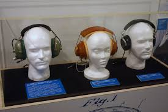

| Nathaniel Baldwin | John C Koss | Sony | Bose | Apple |
|---|---|---|---|---|
| First U.S. Navy Audio Headphones | First Stereo Headphones | First Portable Cassette Player | First Noise Cancelling Headset | First Truly Wireleess and Compact Earbuds |
| 1910 | 1958 | 1979 | 1989 | 2016 |

In 1958, John C. Koss made a leap in the development of personal audio technology with the creation of the first dynamic stereo headphones. Koss sought to enhance the experience of listening to music by allowing individuals to enjoy high-quality sound in an easy way. He introduced the Koss SP/3, the first commercial stereo headphones, which quickly gained popularity among music lovers and audiophiles. Prior to Koss’s innovation, headphones were mainly used for communication purposes, and was typically reserved for large speakers or radio broadcasts. His headphones offered a new way to listen to music, leading to the mass adoption of headphones for personal and home entertainment use. Koss’s breakthrough is considered a milestone in the consumer audio industry.